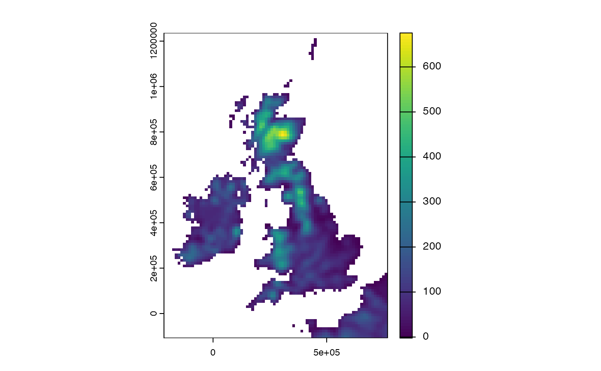
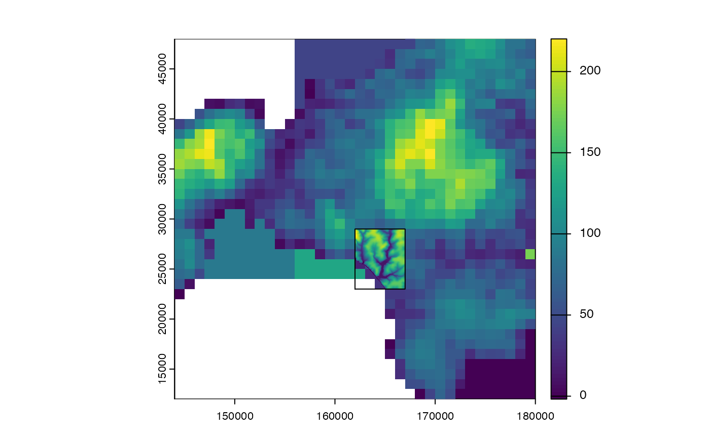
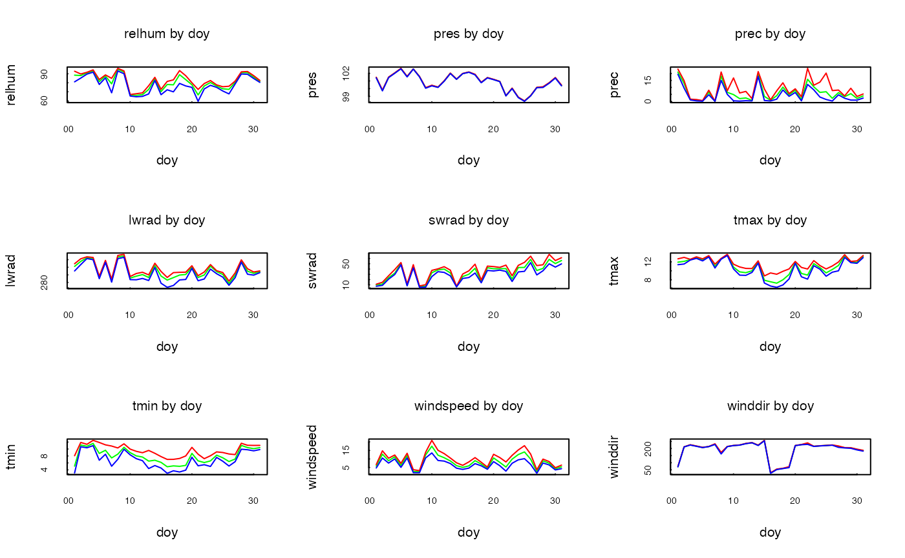
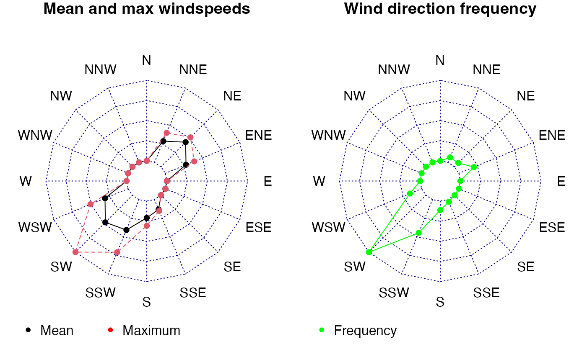

1. Data pre-processing
Source:vignettes/articles/mesoclim_1_preparedata.Rmd
mesoclim_1_preparedata.RmdIntroduction
The mesoclim package provides a suite of tools to enable
the downscaling of coarse resolution climate data to finer spatial
and/or temporal resolutions by simulating physical mesoclimate
processes. It provides local climate outputs that can then be used as
inputs to further modelling of microclimates and beneath canopy
conditions.
Climate data
Climate data is available at many different spatial and temporal resolutions, the extent of which may vary from global to sub-national. Typically, future climate predictions derived from global and regional climate models will have a spatial extent of the order of tens of kilometres and either a daily or hourly resolution. In certain cases, model outputs may conform to a time sequence that does not match future calendar dates. For example, UKCP18 data uses twelve 30-day months for every year.
Different sources of climate data provide different variables using different SI units, in varying formats and using different file naming conventions. Long and shortwave radiation variables, in particular, can vary widely in terms of their meaning and units. UKCP18, for example, only provides net downward longwave and shortwave radiation fluxes, whereas many applications may require absolute downward values. Variables such as windspeed and temperature may also be referenced to different heights above ground, whereas the pressure can be referenced to local elevation or sea-level.
A key part of any climate downscaling and subsequent analysis is the initial analysis of climate data inputs to create a comprehensive set of variables of known definition, reference and units.
Here we consider data preparation and pre-processing for two readily available sources of climate data:
UKCP18 - regional climate model outputs for the UK available at a spatial resolution of 12 km^2 - - Ceda archive
ERA5 - global historical re-analysis hourly data at a spatial resolution of approximately 23 km over the British Isles, available on Copernicus Climate Data Store.
For example, UKCP18RCm provides the underlying orography informing climate model at the native resolution of the climate data:
# Load coarse resolution DTM of the whole of the UK - provided by UKCP18
ukdtm.f<-system.file('extdata/ukcp18rcm/orog_land-rcm_uk_12km_osgb.nc',package='mesoclim')
ukdtmc<-terra::rast(ukdtm.f)
plot(ukdtmc)
Other data requirements
The spatial and temporal downscaling of climate data to finer resolutions requires additional data at the resolution of the input climate data and of the downscaled area of interest. Data requirements include digital terrain maps (‘dtm’), land/sea masks and sea surface temperature timeseries if coastal effects are to be modelled.
Sources of future and historic climate data often, but not always, include ancillary data such as coarse elevation and land/sea masks used in the generation of data. Certain data sources provide sea surface temperatures but many climate sources either only cover land areas or do not include sea temperature data. In the latter case, alternative source of sea temperature data may need to be sourced, ideally generated from the same model runs.
In the case of our chosen climate data sources:
ERA5 reanalysis data - includes hourly sea surface temperature among its climate variables. Land / sea masks and geopotential ancillary data (from which elevation may be calculated) are available at the same spatial resolution as the climate data.
UKCP18 RCM data - land/sea mask and orography data, that can be converted to elevation, are provided at the same spatial resolution as climate data. As the UKCP18RCM data only covers land areas there is no informationn provided on sea surface temperature. Suitable data for many UKCP18 model runs covering the North Atlantic and surrounding area is available on the Ceda archive (Tinker et al. 2024).
Downloading Climate data
The mesoclim package does not include any methods for sourcing climate data. To download climate directly directly from source, we refer to functions within the microclimdata package which interfaces with a number of geospatial data repositories. While data are free, you will need to register to download the data and provide your user credentials to the functions as detailed in the package documentation
For further details see the microclimdata github page
Preprocessing coarse resolution climate data
Preprocessing requirements are specific to different sources of climate data. The mesoclim package includes several functions for preprocessing common sources of climate data.
Defining area of interest
Spatial downscaling requires digital terrain models that extend around the area for which downscaled outputs are required to ensure effects such as wind and coastal downscaling effects are captured. mesoclim makes use of several key extents and resolutions of dtm to inform its spatial downscaling (@fig-threedtms):
dtmf - a fine resolution digital terrrain map covering the area and resolution at which downsclaed climate outputs are required.
dtmc - a coarse resolution digital terrain map at the resolution and projection of the original climate data. The area covered should extend beyond the dtmf by an order of c. 10 km to capture coastal effects.
dtmm - a medium resolution dtm between the dtmf and dtmc in resolution but covering the same extent as the dtmc.
All DTMs are assumed to cover land only, with sea cells are expected to have the value NA.
# Load a fine resolution dtm at the resolution and extent of the downscale area
dtmf<-terra::rast(system.file('extdata/dtms/dtmf.tif',package='mesoclim'))
# Buffer by 10km to account for coastal and wind effects
dtmf.bbox<-vect(ext(dtmf),crs=crs(dtmf))
wideraoi<-buffer(dtmf.bbox,10000)
# Crop out a local coarse dtm from UKCP18RCM orography data
dtmc<-terra::crop(ukdtmc,wideraoi,snap="out")
# Load or create a medium resolution DTM between the resolution of the dtmf and the dtmc but covering the dtmc extent
dtmm<-terra::rast(system.file('extdata/dtms/dtmm.tif',package='mesoclim'))
dtmm<-crop(dtmm,dtmc,snap="out")
# Show local downscale area within wider dtmm
plot(dtmc,legend=FALSE)
plot(dtmm, add=T)
plot(dtmf,add=TRUE,legend=FALSE)
plot(dtmf.bbox,add=TRUE,legend=FALSE)
UKCP18 climate preprocessing
UKCP18 climate files downloadable from the CEDA archive are arranged by the collection, domain, model member, rcp and climate variable. Each variable file covers a ten year period and typically exceeds 100MB in size. UKCP18 data preprocessing requires several modifications to the original data including:
Conversion of 12 x 30-day months to actual dates.
Conversion of net to downward short and longwave radiation.
The conversion of shortwave radiation is calculated using an estimate of albedo at the same resolution as the climate data. Albedo data can either be provided or constant land/sea albedo values are used.
These conversions are carried out byt the function ukcp18toclimarray. Outputs are a list of daily climate variables and associated data which can be written to file using the function write_climdata(). The resulting data structures of preprocessing can be checked to ensure there are no missing or unexpected values that may indicate a difference in the expected SI units or incomplete input datasets.
dir_ukcpdata<-system.file('extdata/ukcprcm_sample',package='mesoclim')
# Define climate data and time period required
collection<-'land-rcm'
domain<-'uk'
member<-'01'
rcp<-'rcp85'
startdate<-as.POSIXlt('2021/01/01', tz="UTC")
enddate<-as.POSIXlt('2021/01/31', tz="UTC")
# Processes using already downloaded ukcp18rcm files in dir_data
ukcp18rcm<-ukcp18toclimarray(dir_ukcpdata, dtmc, startdate, enddate,collection, domain, member)
#> Loading clt_rcp85_land-rcm_uk_12km_01_day_20201201-20301130.nc
#> Loading hurs_rcp85_land-rcm_uk_12km_01_day_20201201-20301130.nc
#> Loading pr_rcp85_land-rcm_uk_12km_01_day_20201201-20301130.nc
#> Loading psl_rcp85_land-rcm_uk_12km_01_day_20201201-20301130.nc
#> Loading rls_rcp85_land-rcm_uk_12km_01_day_20201201-20301130.nc
#> Loading rss_rcp85_land-rcm_uk_12km_01_day_20201201-20301130.nc
#> Loading tasmax_rcp85_land-rcm_uk_12km_01_day_20201201-20301130.nc
#> Loading tasmin_rcp85_land-rcm_uk_12km_01_day_20201201-20301130.nc
#> Loading uas_rcp85_land-rcm_uk_12km_01_day_20201201-20301130.nc
#> Loading vas_rcp85_land-rcm_uk_12km_01_day_20201201-20301130.nc
#> Using constant land and sea albedo values - assuming NA values in dtmc are sea!!
# Check data structure
ukcp18rcm<-checkinputs(ukcp18rcm, tstep = "day", plots=TRUE)
#> [1] "Weather observations = 31"
#> [1] "Timesteps= 24 hours for whole timeseries."
#> [1] "Observations from 2021-01-01 to 2021-01-31"
#> [1] "Temperature values are at 1.5 metres above ground level."
#> [1] "Wind speeds are at 10 metres above ground level."
#> Min. Mean Max.
#> cloud 63.529 89.645 100.000
#> relhum 59.348 80.744 96.006
#> prec 0.010 6.195 23.660
#> pres 98.348 100.860 102.645
#> lwrad 267.297 310.295 353.937
#> swrad 5.345 33.345 67.887
#> tmax 6.336 10.917 13.661
#> tmin 3.008 7.970 12.495
#> windspeed 1.627 8.413 20.869
#> winddir 25.748 191.118 257.024
#> elevation 25.748 42.511 58.514
#> [1] "Plotting spatial variation by day of year: red=max, green=mean, blue=min"
#> [1] "Plotting wind direction figures"
# To write preprocessed data
dir_out<-tempdir()
write_climdata(ukcp18rcm,file.path(dir_out,'ukcp18rcm.Rds'),overwrite=TRUE)
#> NULLThe function create_ukcpsst_data preprocesses sea
surface data derived from UKCP model runs. The function ensures sea data
matches the dtmc in the UKCP18 climate data that has already been
prepared - interpolating where necessary to ensure coast lines match.
Sea surface data will be reprojected to match the crs, resolution and
extent of the provided dtmc - which should extend well at least a full
climate grid cell beyond the final downscaling area.
dir_ukcpsst<-"filepath/to/downloaded/datafiles"
dir_sst<-system.file("extdata/sst_sample", package = "mesoclim")
sst<-create_ukcpsst_data(dir_sst,startdate=startdate,enddate=enddate,dtmc=ukcp18rcm$dtm, member=member)
plot(c(sst[[1]],ukcp18rcm$dtm))ERA5 historical climate data preparation
Historical ERA5 hourly climate variables, including sea surface temperature, are normally downloaded as a single .nc file for a given timeperiod and geographical extent.
ERA5 data offers a wide range of different formats and definitions, particularly of pressure (at sea level or atmospheric) and solar radiation in the form of mean fluxes or MMORE???
Processing is carried out by the function ukcp18toclimarray. Because data file names are typically defined on downloading, a filename containing all necessary variables must be provided.
Either a area of interest (aoi) parameter and/or a dtmc must be provided to the function. Ancillary ERA5 land / sea mask and geopotential data (from which elevation may be calculated) corresponding to the ERA5 spatial grid are available for download and may be provided to the processing function.
Outputs are a list of daily climate variables and associated data
which can be written to file using the function
write_climdata.
startdate<-as.POSIXlt('2020/01/01', tz="UTC")
enddate<-as.POSIXlt('2020/01/31', tz="UTC")
# File path to ERA5 climate and ancillary file - assume all variables in single file
era5file<-system.file('extdata/era5raw/era5_sample.nc',package='mesoclim')
ancillfile<-system.file('extdata/era5raw/era5_ancillary.nc',package='mesoclim')
# Get ERA5 dtm from geopotential
ancillary.r<-rast(ancillfile)
RadEarth = 6371229
gravity = 9.80665
era5dtm<-(ancillary.r$z * RadEarth)/(gravity * RadEarth - ancillary.r$z)
# Get proportion of land mask
era5lsm<-ancillary.r$lsm %>%project("EPSG:4326")
if(max(values(era5lsm))!=1){
mx<-as.numeric(global(era5lsm,max))
mn<-as.numeric(global(era5lsm,min))
era5lsm<- (era5lsm-mn) / (mx-mn)
}
# Get ERA5 climate data - crops and reprojects to aoi
era5data<-era5toclimarray(era5file, dtmc=era5dtm, lsm=era5lsm, aoi=wideraoi, startdate= startdate, enddate=enddate)
#> Warning: [aggregate] all values in argument 'fact' are 1, nothing to do
#> Time difference of 0.03408408 secs
# To write preprocessed data
dir_out<-tempdir()
write_climdata(era5data,file.path(dir_out,'era5data.Rds'),overwrite=TRUE)
#> NULLOnce again data structures can be checked to ensure there are no missing or unexpected values that may indicate a difference in the expected SI units or incomplete input datasets.
{r era5check} era5data<-read_climdata(file.path(dir_out,‘era5data.Rds’)) names(era5data) plot(era5data$dtm)
era5data<-checkinputs(era5data, tstep = “hour”, plots=TRUE) ```
References
Tinker, Jonathan, Matthew D. Palmer, Benjamin J. Harrison, et al. 2024. “Twenty-First Century Marine Climate Projections for the NW European Shelf Seas Based on a Perturbed Parameter Ensemble.” Ocean Science 20 (3): 835–85. [https://doi.org/10.5194/os-20-835-2024]